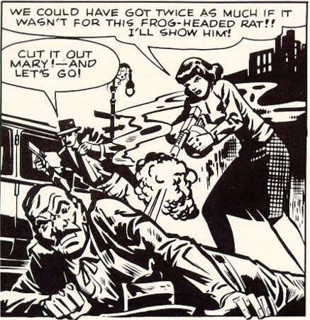
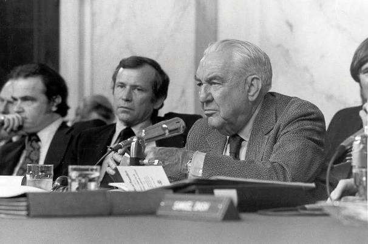

After reading this section, you should be able to answer the following questions:
In 1885, Woodrow Wilson famously observed, “Congress in session is Congress on public exhibition, whilst Congress in its committee-rooms is Congress at work.”Woodrow Wilson, Congressional Government (New York: Houghton Mifflin, 1885), 69. This statement is no less true today. Committees are the lifeblood of Congress. They develop legislation, oversee executive agencies and programs, and conduct investigations.
There are different types of committees that are responsible for particular aspects of congressional work. Standing committeesPermanent legislative committees in the House and Senate. are permanent legislative committees. Select committeesSpecial congressional committees that are formed to deal with particular issues or policies. are special committees that are formed to deal with a particular issue or policy. Special committeesCommittees that investigate problems and issue reports. can investigate problems and issue reports. Joint committeesCommittees composed of members of the House and Senate who handle matters that require the attention of both bodies. are composed of members of the House and Senate and handle matters that require joint jurisdiction, such as the Postal Service and the Government Printing Office. SubcommitteesCommittees under the standing committees that handle specific aspects of legislation and policy. handle specialized aspects of legislation and policy.
Members seek assignments to committees considering the overlapping goals of getting reelected, influencing policy, and wielding power and influence. They can promote the interests of their constituencies through committee service and at the same time help their chances at reelection. Members from rural districts desire appointments to the Agriculture Committee where they can best influence farm policy. Those most interested in foreign policy seek appointment to committees such as the House Foreign Relations and Senate International Affairs Committees, where they can become embroiled in the pressing issues of the day. Power or prestige committeeThe most powerful congressional committees; in the House these include Appropriations, Budget, Commerce, Rules, and Ways and Means; in the Senate these include Appropriations, Armed Services, Commerce, Finance, and Foreign Relations. assignments in the House include Appropriations, Budget, Commerce, Rules, and Ways and Means. The most powerful committees in the Senate are Appropriations, Armed Services, Commerce, Finance, and Foreign Relations.
House and Senate Committees
A list and description of House and Senate committees can be found at http://www.govtrack.us/congress/committee.xpd and http://www.contactingthecongress.org/cgi-bin/committee_list.cgi?site=ctc.
Table 12.1 Congressional Committees
| House Committees | Senate Committees |
|
|
| Joint Committees | |
|
|
Most House members end up getting assigned to at least one committee that they request. In the House, committee assignments can be a ticket to visibility and influence. Committees provide House members with a platform for attracting media attention as journalists will seek them out as policy specialists. Senate committee assignments are not as strongly linked to press visibility as virtually every senator is appointed to at least one powerful committee. The average senator serves on eleven committees and subcommittees, while the average House member serves on five.
Figure 12.11
In the 1950s, Senator Estes Kefauver used controversial comics like “Frisco Mary” to generate press attention for his hearings on juvenile delinquency. This practice of using powerful exhibits to attract media attention to issues continues today.
Service on powerful subcommittees can provide a platform for attracting media attention. In 1955, the Senate Subcommittee on Juvenile Delinquency staged three days of hearings in New York City as part of its investigation into allegations brought by Senator Estes Kefauver (D-TN), a subcommittee member, that violent comic books could turn children into criminals. The press-friendly hearings featured controversial speakers and slides of comic strips depicting a machine gun–toting woman character named “Frisco Mary” blowing away law enforcement officials without remorse that were circulated widely in the media. Kefauver anticipated that the press generated by these hearings would help him gain publicity for a bid to get on the 1956 Democratic presidential ticket. He lost the presidential nomination battle but ended up the vice presidential candidate for the losing side.Amy Kiste Nyberg, Seal of Approval (Oxford: University of Mississippi Press, 1998).
Committees are powerful gatekeepers. They decide the fate of bills by determining which ones will move forward and be considered by the full House and Senate. Committee members have tremendous influence over the drafting and rewriting of legislation. They have access to experts and information, which gives them an advantage when debating bills on the floor.Kenneth A. Shepsle and Barry R. Weingast, “The Institutional Foundations of Committee Power,” American Political Science Review 81: 85–104.
Committee chairs are especially influential, as they are able to employ tactics that can make or break bills. Powerful chairs master the committee’s subject matter, get to know committee members well, and form coalitions to back their positions. Chairs can reward cooperative members and punish those who oppose them by granting or withholding favors, such as supporting pork barrel legislation that will benefit a member’s district.Richard Fenno, Congressmen in Committees (Boston: Little, Brown, 1973).
Most committee work receives limited media coverage. Investigative hearings are the exception, as they can provide opportunities for high drama.
Conducting investigations is one of the most public activities in which congressional committees engage. During the Progressive Era of the 1890s through 1920s, members could gain the attention of muckraking journalistsReporters in the late 1800s to early 1900s who employed an aggressive and dramatic style to expose corruption through newspaper exposés. by holding investigative hearings to expose corruption in business and government. The first of these was the 1913 “Pujo hearings,” in which Rep. Arsene Pujo (D-LA) headed a probe of Wall Street financiers. High-profile investigations in the 1920s included an inquiry into the mismanagement of the Teapot Dome oil reserves. During the Great Depression of the 1930s, Congress conducted an investigation of the stock market, targeting Wall Street once again. Newspapers were willing to devote much front-page ink to these hearings, as reports on the hearings increased newspaper readership. In 1950, Senator Kefauver held hearings investigating organized crime that drew 30 million television viewers at a time when the medium was new to American homes.David R. Mayhew, America’s Congress (New Haven, CT: Yale University Press, 2000).
The Senate convened a special committee to investigate the Watergate burglaries and cover-up in 1973. The burglars had been directed by President Richard Nixon’s reelection committee to break into and wiretap the Democratic National Committee headquarters at the Watergate building complex. The Watergate hearingsSenate investigation in 1973 into the burglaries at the Democratic National Committee headquarters that led to the resignation of President Richard Nixon. became a national television event as 319 hours of the hearings were broadcast and watched by 85 percent of American households. Gavel-to-gavel coverage of the hearings was broadcast on National Public Radio. The senators who conducted the investigation, especially Chairman Sam Ervin (D-NC) and Senator Howard Baker (R-TN), became household names. The hearings resulted in the conviction of several of President Nixon’s aides for obstruction of justice and ultimately led to Nixon’s resignation.Ronald Gray, Congressional Television: A Legislative History (Westport, CT: Greenwood Press, 1984).
Figure 12.12
The Senate Watergate hearings in 1973 were a major television and radio event that brought Congress to the attention of the entire nation. Film clips of highlights from the Watergate hearings are available on the Watergate Files website of the Gerald R. Ford Library & Museum.
Source: Photo courtesy of the US Senate, http://commons.wikimedia.org/wiki/File:ThompsonWatergate.jpg.
In 2002, the House Financial Services Committee held thirteen hearings to uncover how Enron Corporation was able to swindle investors and drive up electricity rates in California while its executives lived the high life. Prior to the hearings, which made “Enron” a household word, there was little press coverage of Enron’s questionable operating procedures.
Enron’s Skilling Answers Markey at Hearing; Eyes Roll
(click to see video)A clip of the Enron hearings before the House illustrates how Congress exercises its investigative power.
The House Un-American Activities Committee and Hollywood
Following World War II, chilly relations existed between the United States and the Communist Soviet Union, a nation that had emerged as a strong power and had exploded an atomic bomb.Ernest Giglio, Here’s Looking at You (New York: Peter Lang, 2000). The House Un-American Activities Committee (HUAC), which was established in 1939 to investigate subversive activities, decided to look into allegations that Communists were threatening to overthrow American democracy using force and violence. People in government, the labor movement, and the motion picture industry were accused of being communists. Especially sensational were hearings where Hollywood actors, directors, and writers were called before the HUAC. It was not uncommon for people in Hollywood to have joined the Communist Party during the Great Depression of the 1930s, although many were inactive at the time of the hearings. HUAC alleged that film “was the principle medium through which Communists have sought to inject their propaganda.”Phillip L. Gianos, Politics and Politicians in American Film (Westport, CT: Praeger, 1998), 65.
Those accused of being communists, nicknamed “reds,” were called before the HUAC. They were subject to intense questioning by members of Congress and the committee’s counsel. In 1947, HUAC held hearings to investigate the influence of Communists in Hollywood. The “Hollywood Ten,” a group of nine screenwriters, including Ring Lardner, Jr. and Dalton Trumbo, and director Edward Dmytryk, were paraded before the committee. Members of Congress shouted to the witnesses, “Are you now or have you ever been a member of the Communist Party?” They were commanded to provide the names of people they knew to be Communists or face incarceration. Some of the Hollywood Ten responded aggressively to the committee, not answering questions and making statements asserting their First Amendment right to free expression. Blinding flashbulbs provided a constant backdrop to the hearings, as photographers documented images of dramatic face-offs between committee members and the witnesses. Images of the hearings were disseminated widely in front-page photos in newspapers and magazines and on television.
The HUAC hearings immortalized the dramatic image of the congressional investigation featuring direct confrontations between committee members and witnesses.
Source: Photo courtesy of the Harris and Ewing Collection, http://commons.wikimedia.org/wiki/File:Agnes_Reynolds_and_Joseph_P_Lash_1939.jpg.
The Hollywood Ten refused to cooperate with HUAC, were cited for contempt of Congress, and sent to prison.Larry Ceplair, “The Hollywood Blacklist,” in The Political Companion to American Film, ed. Gary Crowdus (Chicago: Lakeview Press, 1994), 193–99. They were blacklisted by the leaders of the film industry, along with two hundred other admitted or suspected communists, and were unable to work in the motion picture industry. Pressured by personal and financial ruin, Edward Dmytryk eventually gave in to HUAC’s demands.
Commercial films have perpetuated the dramatic image of congressional hearings made popular by the HUAC investigations. Films released around the time of the hearings tended to justify the actions the HUAC, including Big Jim McClain (1952) and On the Waterfront (1954). The few films made later are more critical. Woody Allen plays a small-time bookie who fronts for blacklisted writers in The Front (1976), a film depicting the personal toll exacted by the HUAC and blacklisting. In Guilty by Suspicion (1991), Robert DeNiro’s character refuses to name names and jeopardizes his career as a director. One of the Hollywood Ten (2000), graphically depicts film director Herbert Biberman’s experience in front of the HUAC before he is jailed for not cooperating.
Much of the important work in Congress is accomplished through committees. The fate of legislation—which bills will make it to the floor of the House and Senate—is determined in committees. Members seek committee assignments considering their desire to influence policy, exert influence, and get reelected. Most committee work receives little, if any, media coverage. Investigative committees are the exception when they are covering hearings on high-profile matters.